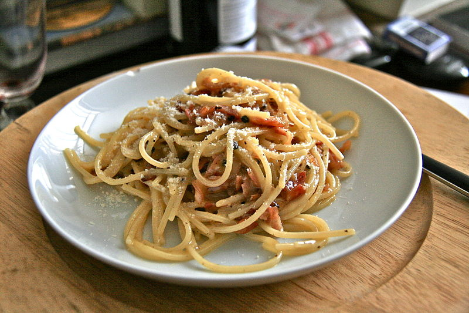

Spaghetti alla Carbonara

Description
Spaghetti alla Carbonara is a variant of the pasta made using made with eggs, pecorino romano (a type of Italian cheese), cured fatty pork dices (also known as guanciale) or bacon and black pepper.
The name of the spaghetti is taken from an origin story which claimed that it was originally prepared for coal miners or that it was originally cooked over charcoal grills. However, the earliest concrete record for spaghetti alla carbonara is from the mid 20th century after world war 2.
Ingredients (for one serving)
- 80 g (0.175 lb / 2.8 oz) pasta
- 38 g (1.34 oz) guanciale or bacon
- 1 egg yolk
- 30-60g (1-2 oz) grated cheese (pecorino romano and parmigiano-reggiano)
- 1-2 teaspoon extra virgin olive oil
- Pepper and salt (to taste)
- (optional) vegetables and/or mushrooms
Steps
Pasta preparation
- Boil a pot of water and add salt to taste.
- Boil the pasta until it is "al dente" (which means that the pasta is firm and when eaten, does not feel hard)
- Drain all but one cup of water from the pot.
Ingredients preparation
Do this while waiting for the pasta to turn "al dente"
- Heat olive oil in a frying pan until it is hot. Then, reduce the heat to the lowest and cook the guanciale or bacon for about 10 minutes.
- Drain half of the remaining pasta water from before into a bowl and mix it with the egg yolk. Add grated cheese and continue mixing.
- Trasnfer the pasta to the frying pan with the pork.
- Add the egg-cheese mixture and the remaining pasta water into the pan to create the sauce.
- (Optional) Mix all the other ingredients together. These ingredients are not found in traditional Italian spaghetti alla carbonara but are seen in American or British variants.
- Add black pepper and serve
References
Return back to the home page for more recipes
.JPG){kind=link}